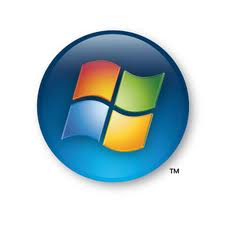

Windows Vista
|
Windows Vista (2006) (nome in codice Longhorn), è una versione dei sistemi operativi Microsoft della famiglia Windows, che si rivolge ad utenza domestica oppure business, in funzione della versione acquistata. È infatti il successore di Microsoft Windows XP. Come il predecessore, non è impiegabile in installazioni di tipo server, ma è previsto il suo impiego unicamente come postazione di lavoro (client). Esso è stato seguito nel 2009 da Windows 7.
La versione "RTM" (Release to manufacturing), chiamata anche "Gold", è stata rilasciata l'8 novembre 2006, per consentire ai produttori di software terze parti lo sviluppo di driver specifici. La versione commerciale è stata resa disponibile alcuni mesi dopo. In particolare la versione worldwide, quella realmente disponibile al pubblico di tutto il mondo, è stata rilasciata il 30 gennaio 2007 con la messa in vendita anche sul sito web ufficiale.
Windows Vista ha richiesto comunque una gestazione di oltre cinque anni, dal debutto del suo predecessore Windows XP, rendendo quest'ultimo il prodotto più longevo della storia dei sistemi operativi Microsoft Windows.
Del resto Vista contiene molte nuove funzioni, paragonandolo al suo predecessore, e diverse migliorie. Fra le più celebrate, senza dubbio, la nuova GUI (graphical user interface) chiamata Windows Aero. Inoltre uno dei principali obiettivi di Microsoft era di produrre un sistema operativo che garantisse all'utilizzatore una maggiore sicurezza, oggetto di forti critiche mosse nei confronti di Windows XP, unitamente alla vulnerabilità rispetto a virus informatici, malware ed a problemi legati ad errori ricorrenti di Buffer overflow.
Proprio alla luce di tutto questo, verso la fine del 2002, Microsoft attraverso la voce di Bill Gates in persona annunciò una nuova strategia di sviluppo, tesa ad integrare soluzioni di sicurezza nella realizzazione di nuove funzionalità. È proprio questo uno dei motivi ufficiali del ritardo nello sviluppo di questa versione del sistema operativo. Tuttavia Windows Vista ha ricevuto numerose critiche negative legate alle elevate richieste di risorse hardware, decisamente maggiori di Windows XP, inoltre anche per il problema dello svariato numero di software e programmi non compatibili con il sistema operativo ed un consumo di elettricità superiore rispetto al suo predecessore, al punto da spingere numerosi utenti insoddisfatti a tornare al vecchio sistema operativo di Microsoft.
|
|  |
| HOME
|